| Product | Details |
|---|---|
| 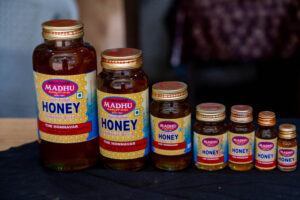 | NATURAL HONEY :-1KG JAR, 500GM JAR, 200GM JAR, 100GM JAR, 50GM JAR, 25GM JAR |
| 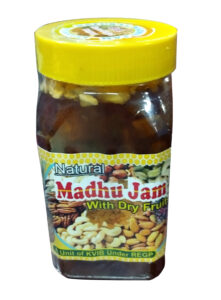 | MADHU JAM :-500GM, 250GM |
| 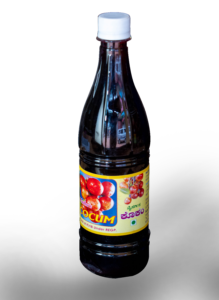 | KOKUM SYRUP :-700ML |
| 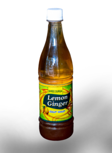 | LEMON GINGER SYRUP :-700ML |
| Equipments | Details |
|---|---|
| 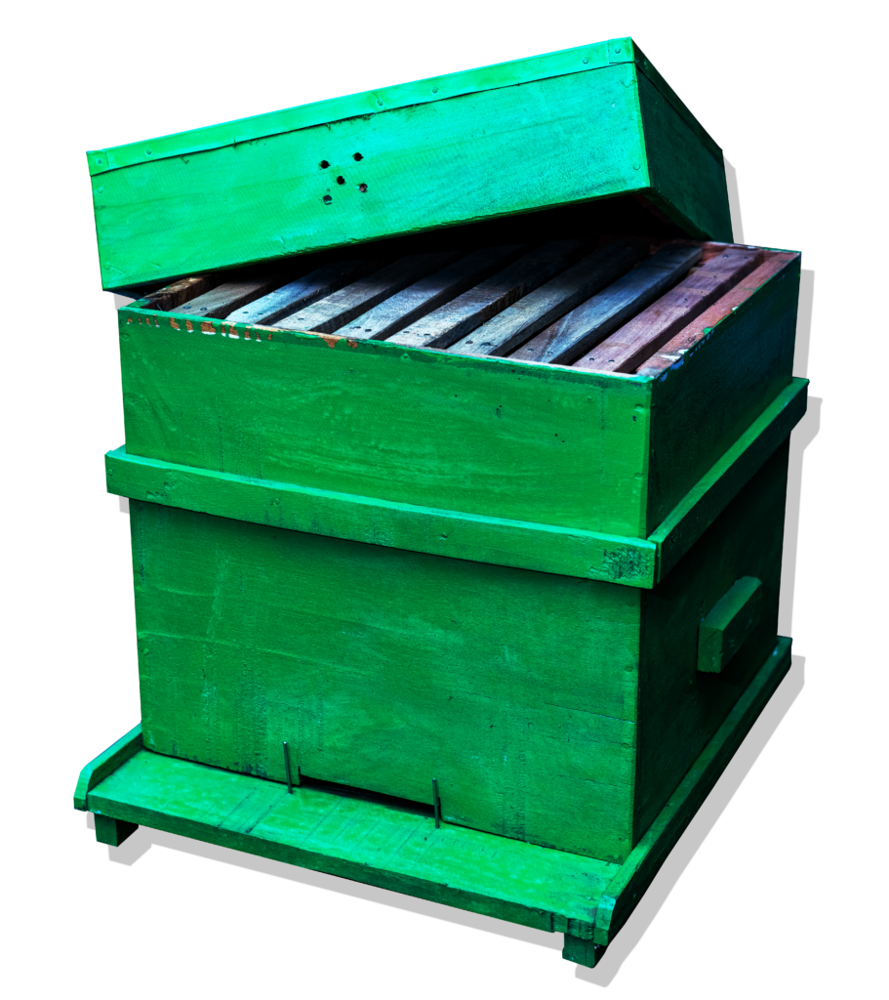 | BEE BOXES:-Bee boxes are used for beekeeping, The bottom board on which the rest of the hive The hivebody, made from a box called a super, where the queen lays her eggs and the workers raise the brood. The queen excluder, a mesh that the queen cannot fit through, which keeps the queen from laying eggs in the honey cells. |
| 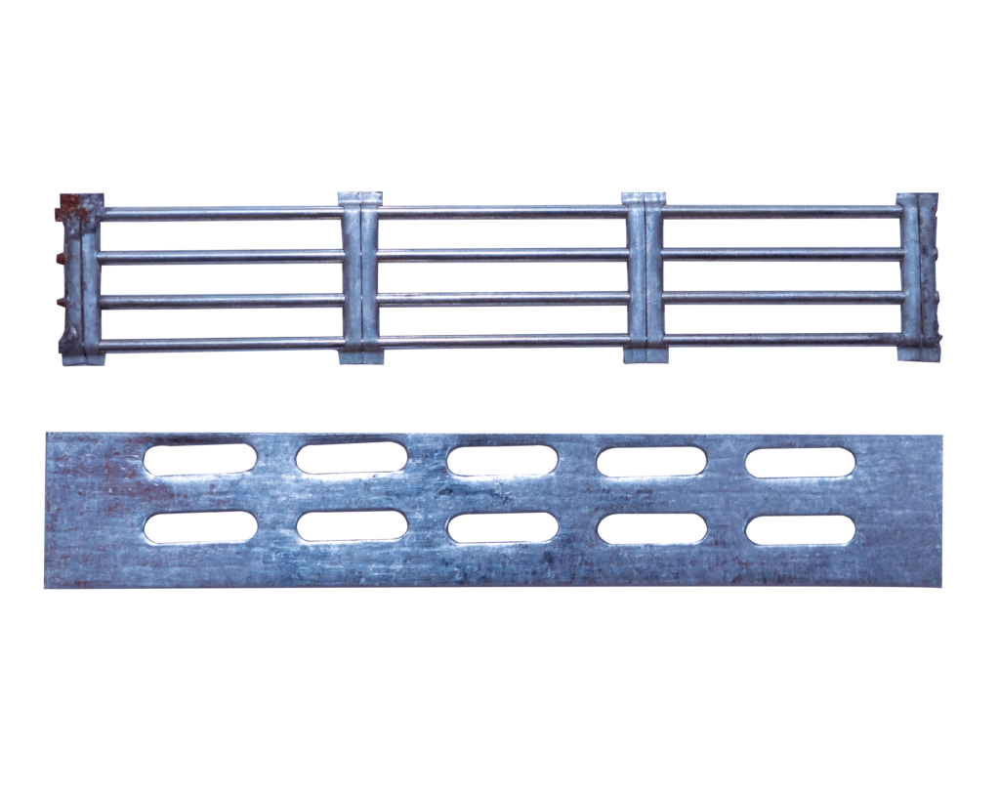 | QUEEN GATE:-It confines the queen inside the hive. It is useful to prevent swarming and absconding. It also prevents the entry of bee enemies like wasps into the hive. |
| 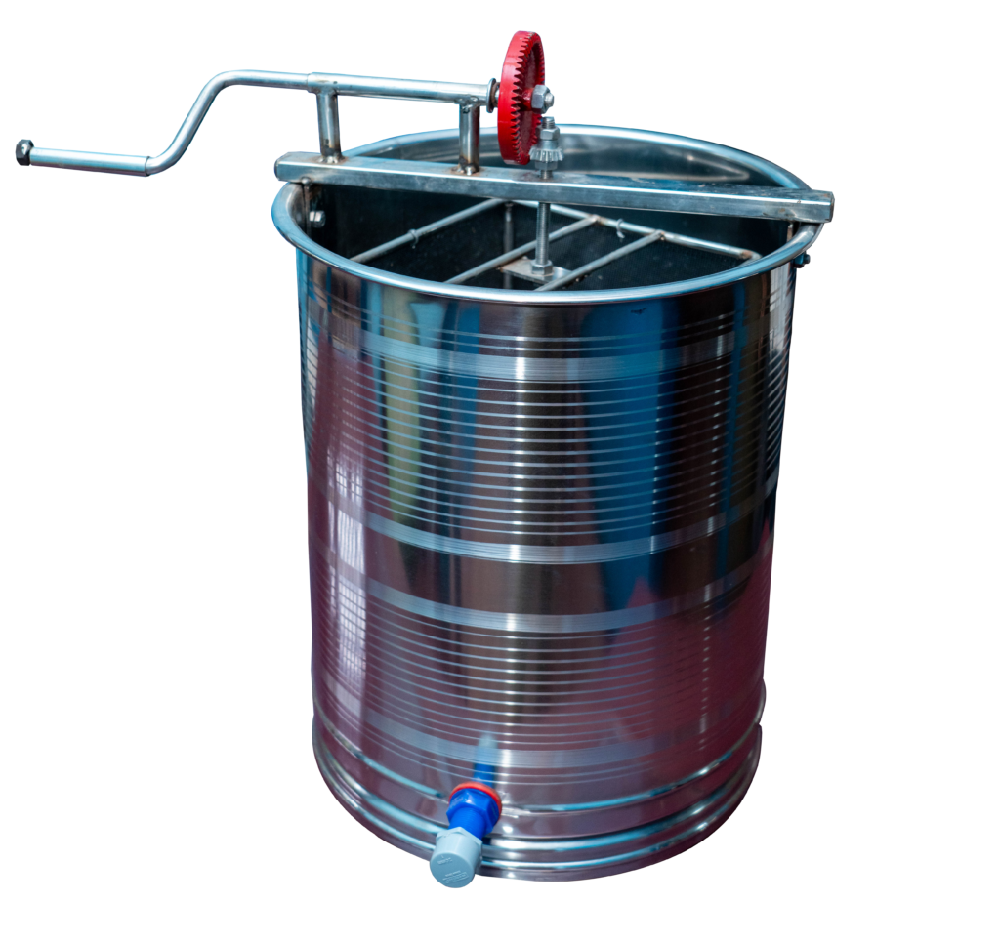 | HONEY EXTRACTOR:-A honey extractor is a mechanized device which is used for the extraction of honey from bee combs without damaging them. The device works by way of centrifugal force. The extractor contains a cylindrical drum that holds the frame basket, and by spinning it around is able to extract honey out of the combs. |
| 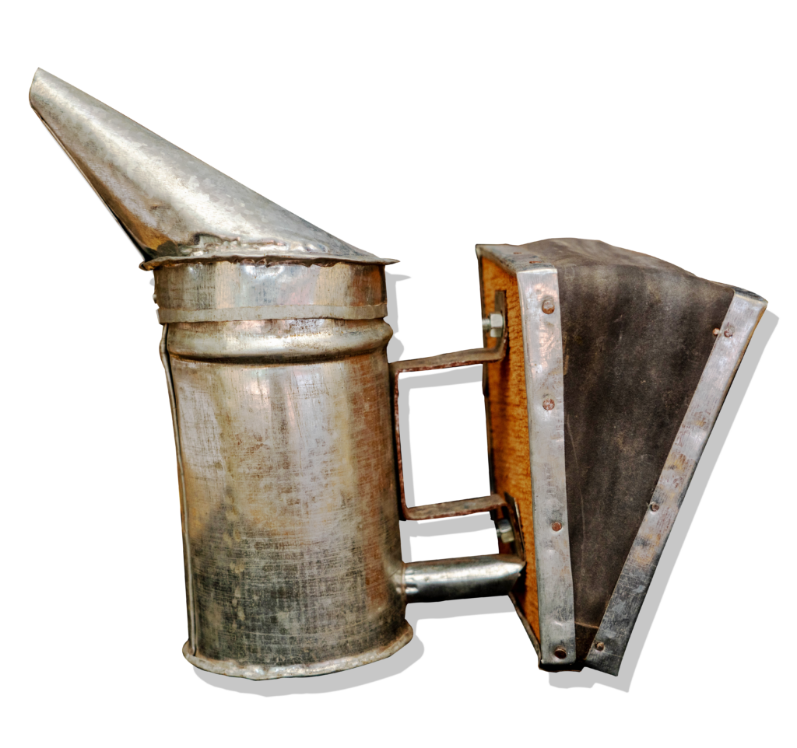 | BEE SMOKER:-Bee smoker is a device used in beekeeping to calm honey bees. It is designed to generate smoke from the smouldering of various fuels, hence the name. |
| 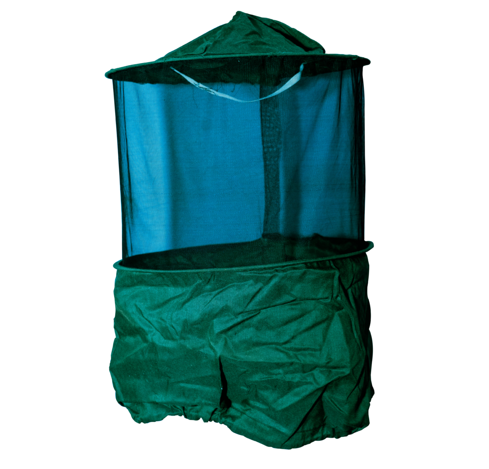 | BEE VEIL:-Facial bee veil (part of bee keepers suit) protects the head of beekeeper from stings. It consists of wire veil, lined with cloth. … It’s like a bag of tulle, worn on the head so that it does not touch the face (it is best to wear a hat.) |
| 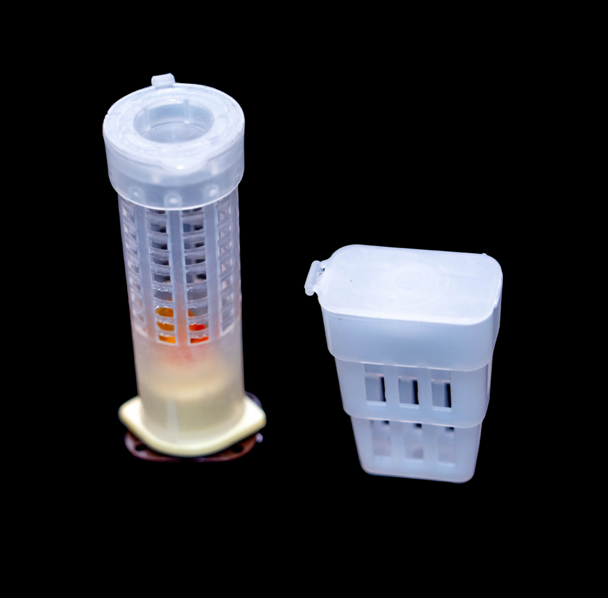 | QUEEN CAGE / QUEEN EXCLUDER:-It is inserted in between the brood frames in single storey hive. Uses: It is useful to confine the queen to brood chamber. But it allows the workers to have access to super. It prevents the queen from laying eggs in honey combs. |
| 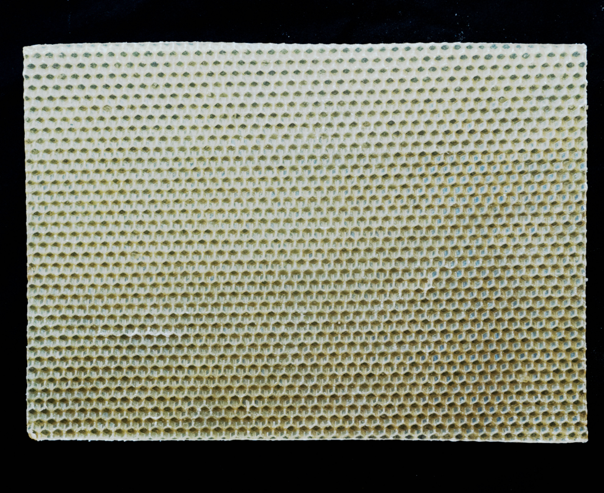 | COMB FOUNDATION SHEET:-Foundation are sheets of beeswax that are used to guide the comb building and give support to the comb. Foundation is not required, as bees will build comb without it. Foundation is used to guide the location and orientation of the comb. |
| 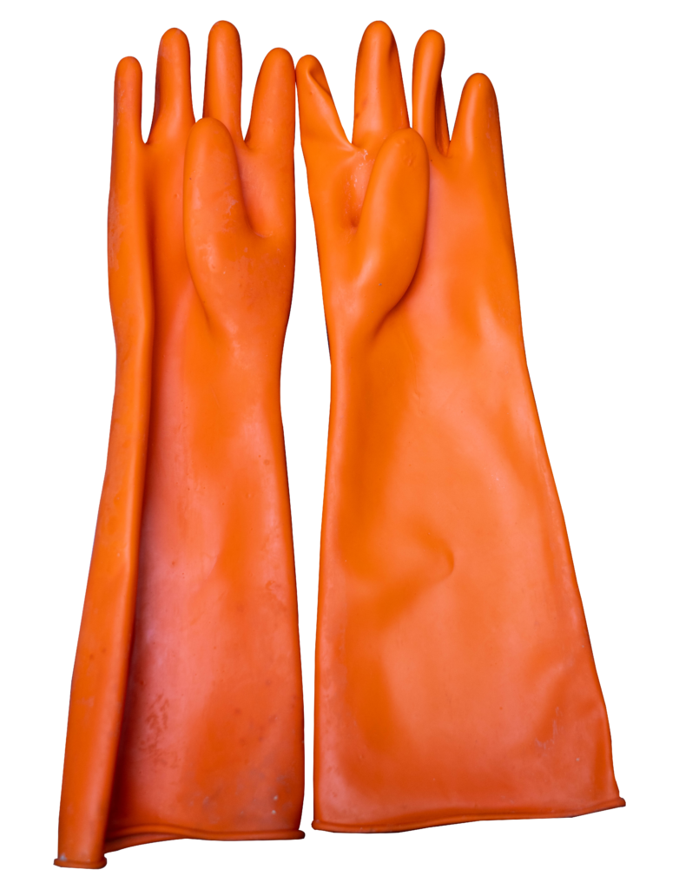 | HAND GLOUSE:-The beekeeping gloves are mainly used to avoid being stung as a sting on a hand will cause swelling. |
| 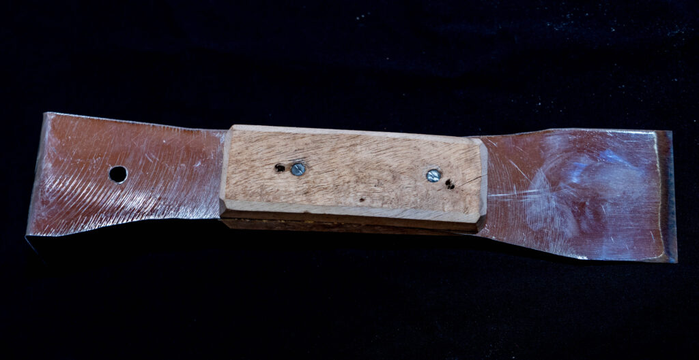 | HIVE TOOL:-A hive tool is a handheld multipurpose tool used in maintaining and inspecting beehives. It is an all-in-one tool for beekeepers. |